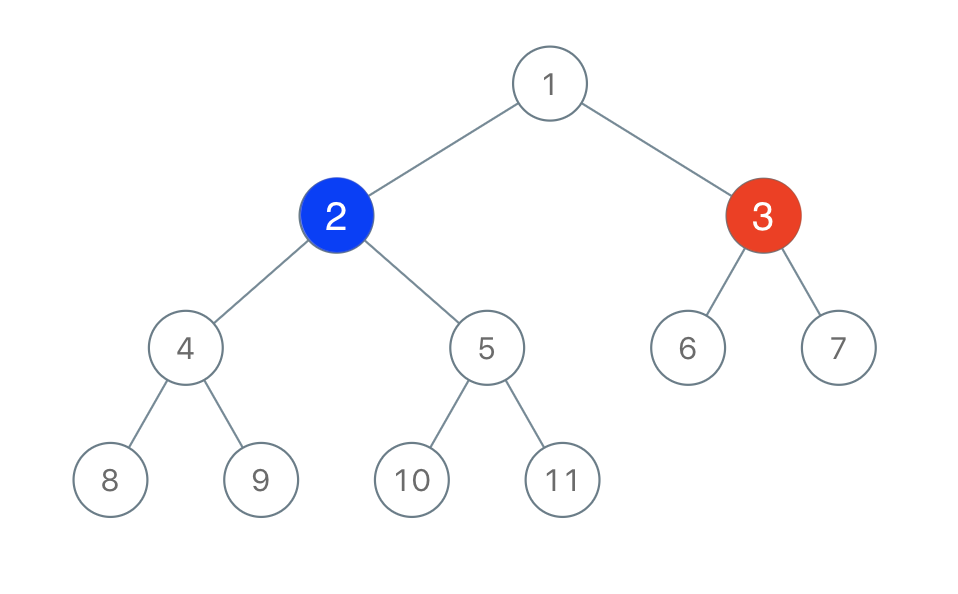

1145. 二叉树着色游戏
二号的最优一手是封住 x 三个方向（左子树、右子树、父方向）中最大的那块；那块 > n/2 就必赢。
思路
y一旦落下，红蓝就被隔开、各自只能在自己连通块里长：双方最终各拿整个连通块。- 所以只需比较三块大小：
x的左子树、右子树、父方向（n − 1 − 左 − 右），二号挑最大的封。 - 最大一块
> n/2（n为奇数，即严格过半）二号必赢；三块都不过半则一号必赢。
图解
最优解
1class Solution {2 public boolean btreeGameWinningMove(TreeNode root, int n, int x) {3 TreeNode node = find(root, x);4 int left = size(node.left), right = size(node.right);5 // 二号玩家最优：封住 x 的左子树、右子树或父方向（三选一最大的那块）6 int rest = n - 1 - left - right;7 int best = Math.max(left, Math.max(right, rest));8 return best > n / 2; // 自己那块 > 对方所有 → 必赢（n 为奇数）9 }10 11 // 按值找到 x 结点（题面保证值互不相同）12 private TreeNode find(TreeNode node, int x) {13 if (node == null || node.val == x) return node;14 TreeNode l = find(node.left, x);15 return l != null ? l : find(node.right, x);16 }17 18 private int size(TreeNode node) {19 return node == null ? 0 : 1 + size(node.left) + size(node.right);20 }21}题目
有两位极客玩家参与了一场「二叉树着色」的游戏。游戏中，给出二叉树的根节点 root，树上总共有 n 个节点，且 n 为奇数，其中每个节点上的值从 1 到 n 各不相同。
最开始时：
- 「一号」玩家从
[1, n]中取一个值x（1 <= x <= n）； - 「二号」玩家也从
[1, n]中取一个值y（1 <= y <= n）且y != x。
「一号」玩家给值为 x 的节点染上红色，而「二号」玩家给值为 y 的节点染上蓝色。
之后两位玩家轮流进行操作，「一号」玩家先手。每一回合，玩家选择一个被他染过色的节点，将所选节点一个 未着色 的邻节点（即左右子节点、或父节点）进行染色（「一号」玩家染红色，「二号」玩家染蓝色）。
如果（且仅在此种情况下）当前玩家无法找到这样的节点来染色时，其回合就会被跳过。
若两个玩家都没有可以染色的节点时，游戏结束。着色节点最多的那位玩家获得胜利 ✌️。
现在，假设你是「二号」玩家，根据所给出的输入，假如存在一个 y 值可以确保你赢得这场游戏，则返回 true ；若无法获胜，就请返回 false 。
示例 1 ：

输入：root = [1,2,3,4,5,6,7,8,9,10,11], n = 11, x = 3 输出：true 解释：第二个玩家可以选择值为 2 的节点。
示例 2 ：
输入：root = [1,2,3], n = 3, x = 1 输出：false
提示：
- 树中节点数目为
n 1 <= x <= n <= 100n是奇数1 <= Node.val <= n- 树中所有值 互不相同
题面取自力扣当前版本。
数据快照 2026-11-04。题面版权归力扣所有，本站点仅供本人学习使用，请勿对外发布。